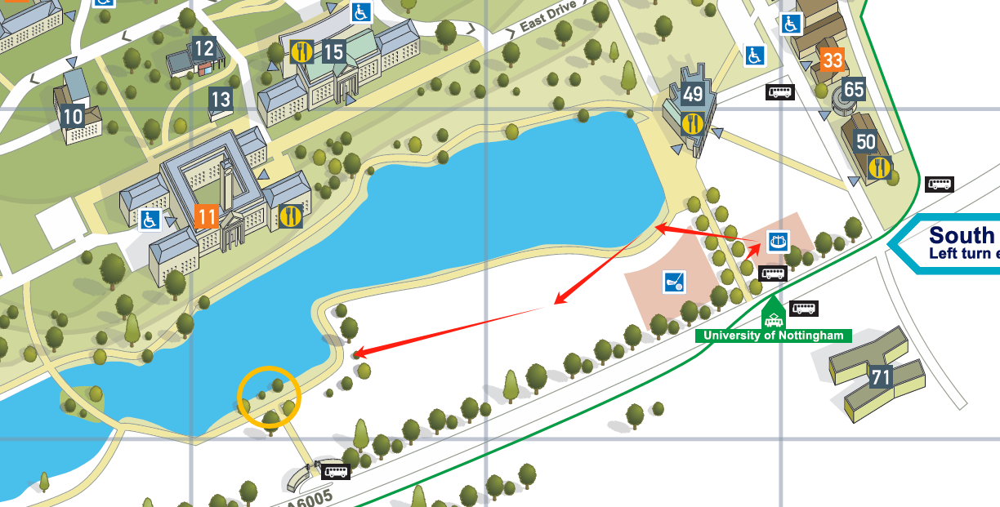

There is a map and whispers in verse.
No hero but you, and the path beneath your feet.
You will journey through four symbols:
Playfulness, Nature, the Journey, and the Guardian.
Let the clues lead you — the treasure awaits.
Clue tip:

Highfields Park Boating LakeNottingham NG7 2PS
Do you also have a musical dream when you recall your childhood?